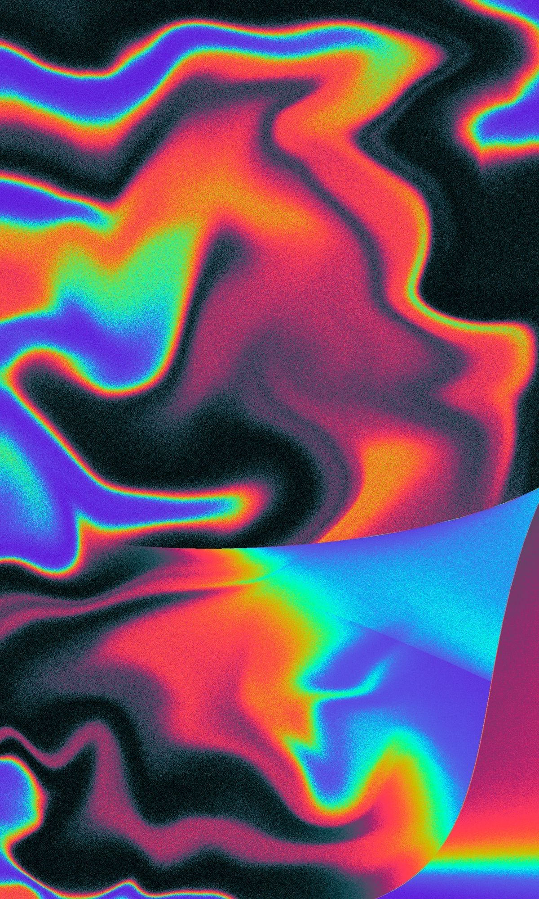

THE
FORECAST
Drag to Explore My Collection
All Records
✕
20 Explosive Hits — 20 Original Stars
A Legendary Performer — Henry Mancini
A Man and a Woman — Francis Lai
A Song for You — Carpenters
Angstlos — Nina Hagen
Bandana — Freddie Gibbs
Brandenburgische Konzerte — Johann Sebastian Bach
Chu — Chu Berry & His Stompy Stevedores
Dance Pieces — Philip Glass
Document — R.E.M.
For Love of Ivy — Sidney Poitier
Frank's Wild Years — Tom Waits
Fresh Fruit for Rotting Vegetables — Dead Kennedys
Golden Shower of Hits — Circle Jerks
Gravity Talks — Green on Red
Hallowed Ground — Violent Femmes
He's the King — Al Hirt
Holy Wars — Tuxedo Moon
In the Crowd — Ramsey Lewis Trio
Jacquet Street — Illinois Jacquet
Journey to Love — Stanley Clarke
Madvillainy — MF DOOM
Mark of the Mole — The Residents
More Songs About Buildings and Food — Talking Heads
Morally Bankrupt — Morally Bankrupt
On Film — Cab Calloway
Rat Music for Rat People — Various
Seven Year Ache — Rosanne Cash
Sex Bomb Baby — Flipper
Snap! — The Jam
So — Peter Gabriel
Telephone Free Landslide Victory — Camper Van Beethoven
The Beat of the Big Bands — Artie Shaw
The Original Boogie Woogie Piano Giants — Various
V.S. — Mission of Burma
War — U2
Washington Square — Washington Square Stompers
You Better Move On etc. — The Rolling Stones
Green on Red — Green on Red